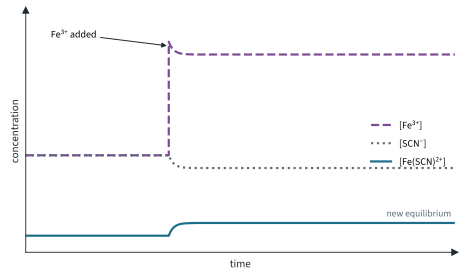
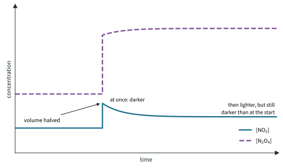
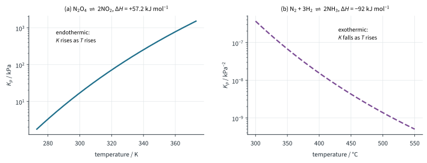
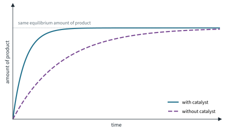
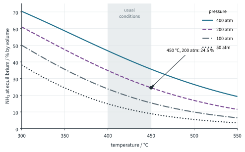
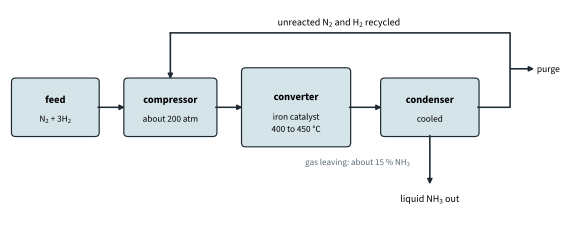

Chemical Equilibria 2
Topic 9 · Chemical Equilibria Part 2
On this page
In Part 1 the conditions were fixed and we worked out where the equilibrium settled. Now we change the conditions while the system is at equilibrium. Does it shift? Which way? Does K change? The answers explain how a chemical plant gets a useful yield from a reaction that, left to itself, would stop a long way short of completion.
Le Chatelier's Principle
Two words to be careful with:
- "Oppose", not "cancel". The system reduces the effect of the change, but it never undoes it completely. You will see this with the gas syringe below.
- "Position": a shift to the right means more products and less reactants than before; to the left, the opposite. A shift in position does not by itself mean K has changed. Only a change of temperature changes K.
Le Chatelier's Principle predicts the direction. The K expression explains why, and it gives the better explanation for concentration and pressure changes.
Changing the concentration
Iron(III) ions and thiocyanate ions form a blood-red complex ion:
Fe3+(aq) + SCN−(aq) ⇌ [Fe(SCN)]2+(aq) Kc = [Fe(SCN)2+] / ([Fe3+][SCN−])
Fe3+(aq) solutions look pale yellow (Topic 13 gives the reason) and SCN−(aq) is colourless, so the depth of red tells you where the equilibrium lies. Add a few drops of concentrated iron(III) chloride solution to an equilibrium mixture and it turns deeper red.
- Le Chatelier: [Fe3+] has been increased, so the position of equilibrium shifts to the right to remove some of the added Fe3+. More [Fe(SCN)]2+ forms.
- Using Kc: at the moment of adding, the denominator [Fe3+][SCN−] is bigger, so the ratio [Fe(SCN)2+] / ([Fe3+][SCN−]) is now less than Kc. The forward reaction is now faster than the reverse, until the ratio rises back to Kc.1 Kc itself has not changed: the temperature is the same.

Adding SCN− (as potassium thiocyanate) has the same effect. Removing either reactant, or adding a reagent that removes one, shifts the position to the left and the colour fades.
Diluting with water
Add water and the red fades by more than dilution alone would cause. Every concentration falls by the same factor, but there are two dissolved particles on the left and only one on the right, so the denominator of Kc falls more than the numerator: the ratio is now greater than Kc, and the position shifts to the left, the side with more dissolved particles.
The cobalt chloride equilibrium
In concentrated chloride solutions, pink hexaaquacobalt(II) ions are in equilibrium with blue tetrachlorocobaltate(II) ions:
[Co(H2O)6]2+(aq) + 4Cl−(aq) ⇌ [CoCl4]2−(aq) + 6H2O(l) (pink ⇌ blue)
A mixture of the two looks violet. Add concentrated hydrochloric acid ([Cl−] up): the position shifts right and the solution turns blue. Add water: the position shifts left and it turns pink. (Water is the solvent, so it does not appear in Kc; adding it lowers [Cl−] and the other concentrations.) This system also responds to temperature: see below.
Changing the pressure
Pressure matters only for equilibria involving gases, and only when the two sides have different numbers of moles of gas. The usual way to change the pressure is to change the volume. Take dinitrogen tetroxide (colourless) and nitrogen dioxide (brown):
N2O4(g) ⇌ 2NO2(g) 1 mol of gas ⇌ 2 mol of gas
Push in the plunger of a sealed gas syringe holding the equilibrium mixture, halving the volume, and watch from the side, across the barrel (Fig 2):
- At once, darker. Every concentration doubles, including [NO2].
- Then lighter. By Le Chatelier, the position shifts to the left, the side with fewer moles of gas, which lowers the pressure. Some NO2 dimerises.
- But still darker than at the start. The change is opposed, not cancelled: the final [NO2] is higher than before the push.

Using Kp: doubling the total pressure doubles every partial pressure. In Kp = pNO₂2 / pN₂O₄ the top is multiplied by 4 and the bottom by 2, so the ratio is now twice Kp. The reverse reaction is faster until the ratio falls back to Kp. Kp itself is unchanged.
For H2(g) + I2(g) ⇌ 2HI(g), with 2 mol of gas on each side, a change of pressure has no effect on the position: top and bottom of Kp change by the same factor.
Changing the temperature
Temperature is different from everything else in this Part: changing the temperature changes the value of K.
- Raise the temperature: by Le Chatelier, the position shifts in the endothermic direction, which absorbs some of the added heat.
- Lower the temperature: the position shifts in the exothermic direction, which releases heat.
For N2O4(g) ⇌ 2NO2(g), ΔH = +57.2 kJ mol−1 (literature value): the forward reaction is endothermic. A sealed tube of the mixture turns browner in hot water and paler in ice. Kp rises with temperature:
| Temperature / K | 273 | 298 | 323 | 353 |
|---|---|---|---|---|
| Kp / kPa | 1.75 | 14.5 | 86.7 | 530 |
(Calculated from ΔH = +57.2 kJ mol−1 and ΔS = +175.9 J K−1 mol−1 (literature), taken as constant; the measured Kp at 298 K is about 15 kPa.) For an exothermic reaction such as the Haber reaction it is the other way round: K falls as the temperature rises (Fig 3). The violet cobalt chloride mixture also responds: it turns blue when warmed and pink when cooled.

Beyond the syllabus: why does temperature change K when concentration and pressure do not? Raising the temperature speeds up both reactions, but it speeds up the one with the higher activation energy more. For an endothermic forward reaction, that is the forward reaction (Topic 7 Part 1, Worked example 1: read it from the profile), so the balance between the rates settles at a new, larger K.
Adding a catalyst
A catalyst provides an alternative reaction pathway with lower activation energy (Topic 8 Part 2). The forward and reverse reactions go through the same pathway, so Ea falls by the same amount for both, and both rates increase by the same factor.
- Equilibrium is reached sooner.
- The position of equilibrium does not change, and K does not change: the same amounts are present at equilibrium, with or without the catalyst.

What changes the value of K?
This is 9476 outcome 9(c), and a favourite in examinations.
| Change | Position of equilibrium | Value of K |
|---|---|---|
| Concentration of a reactant or product | Shifts to oppose the change | Unchanged |
| Pressure (gases, different moles of gas on each side) | Shifts towards fewer moles of gas when pressure rises | Unchanged |
| Temperature | Shifts in the endothermic direction when T rises | Changes (rises for endothermic, falls for exothermic forward reactions) |
| Catalyst | No change; equilibrium reached sooner | Unchanged |
The Haber process
Ammonia is made from nitrogen and hydrogen; most of it goes into fertilisers.
N2(g) + 3H2(g) ⇌ 2NH3(g) ΔH = −92 kJ mol−1 (literature value, as Topic 7)
The nitrogen comes from the air and the hydrogen from natural gas (methane). The conditions are:
| Condition | Typical value |
|---|---|
| Temperature | 400 to 450 °C (about 700 K) |
| Pressure | about 200 atm (2.0 × 104 kPa); plants run between 100 and 250 atm |
| Catalyst | finely divided iron2 |
| Feed ratio | N2 : H2 = 1 : 3 by volume, the ratio in the equation |
| Product removal | the gas leaving the converter is cooled, ammonia condenses (b.p. −33 °C at 1 atm, literature value; at plant pressure it condenses at a much higher temperature) and is run off; unreacted N2 and H2 are recycled |
Each condition is a balance between the yield (where the equilibrium lies) and the rate (how fast it gets there), with cost and safety in the background. Fig 5 shows how much ammonia there is at equilibrium under different conditions.

Temperature
The forward reaction is exothermic, so a lower temperature shifts the equilibrium to the right and K is larger: at 200 atm the model gives 61 % ammonia at 300 °C but only 24.5 % at 450 °C. But at low temperature the rate is far too slow, and the iron catalyst needs about 400 °C to work well. 400 to 450 °C is a compromise: a lower equilibrium yield, reached quickly enough to be worthwhile.
Pressure
4 mol of gas on the left, 2 mol on the right, so a higher pressure shifts the equilibrium to the right (Fig 5), and it also increases the rate, because the gas molecules are closer together and collide more often. Against that, high pressure is expensive: powerful compressors, a lot of electrical energy, and thick-walled vessels and pipework, with a greater hazard if anything fails. Above about 200 atm the extra ammonia does not pay for the extra cost, so this is a compromise too.
Catalyst
The iron catalyst does not change the yield at equilibrium; it lets the plant get close to equilibrium quickly at a temperature where the yield is still reasonable. It is heterogeneous (solid iron, gaseous reactants): N2 and H2 adsorb onto the iron surface, their bonds weaken, they react, and NH3 desorbs (Topic 8 Part 2).
Removing the ammonia and recycling
The gas spends only a short time in the converter, so it does not reach equilibrium: typically about 15 % of it leaves as ammonia. Cooling it liquefies the ammonia, which is removed; the unreacted nitrogen and hydrogen are recompressed and sent round again (Fig 6). Removing the product keeps pulling the reaction forward, and recycling means that overall about 98 % of the nitrogen and hydrogen ends up as ammonia.

Summary
Additional information
- Beyond the syllabus: this ratio, worked out with the concentrations or pressures at any moment, is called the reaction quotient, Q. ↩
- In practice the iron is "promoted" with small amounts of potassium oxide and aluminium oxide, which make it more active and stop the tiny iron crystals sintering together. ↩